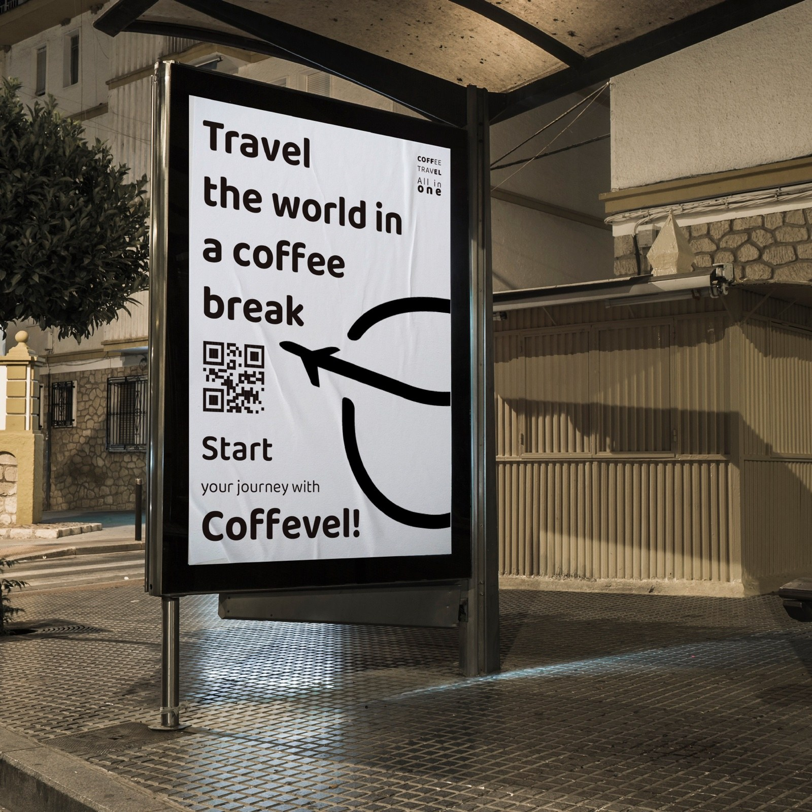
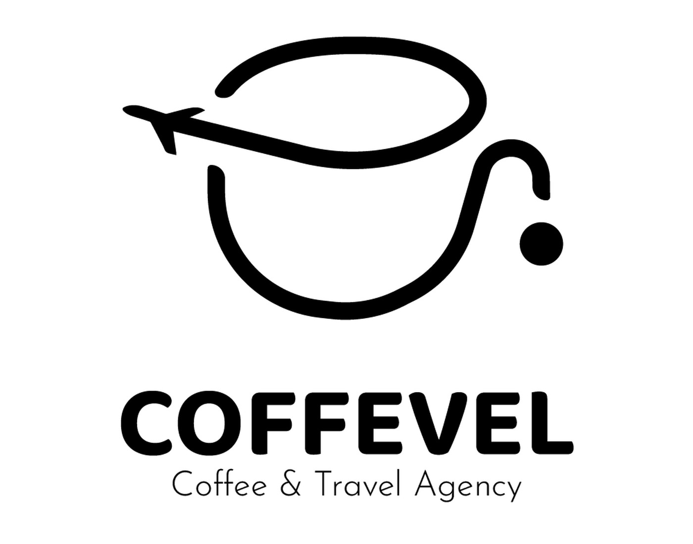
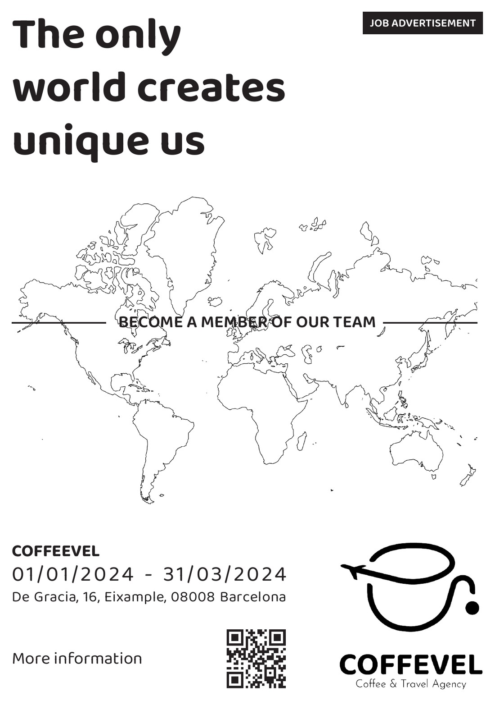
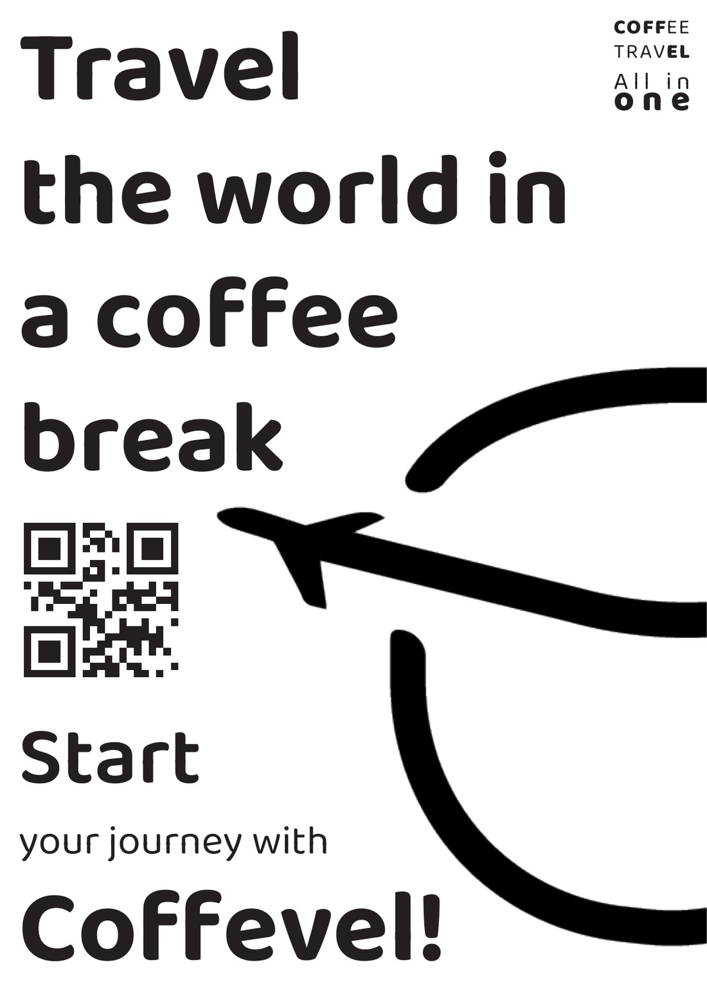
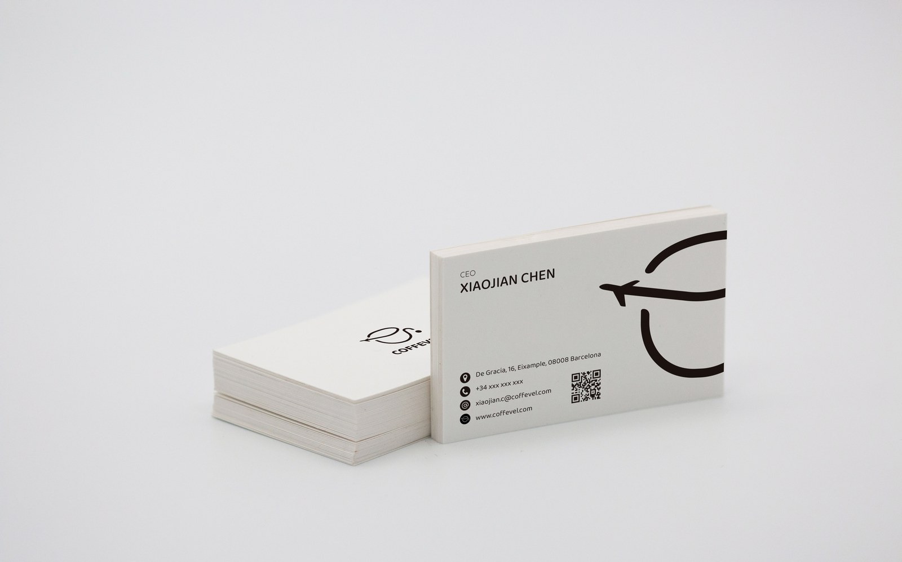
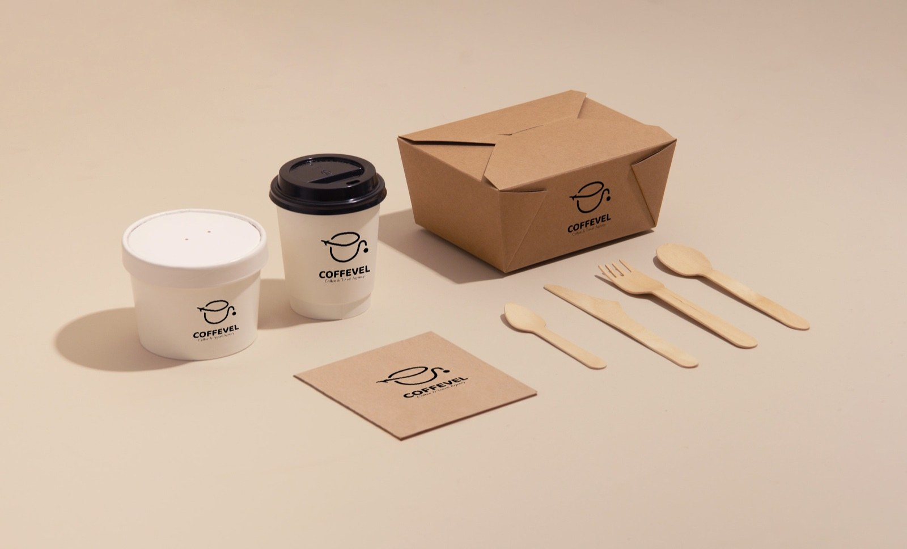
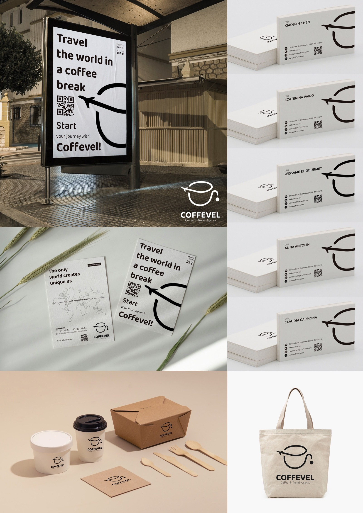
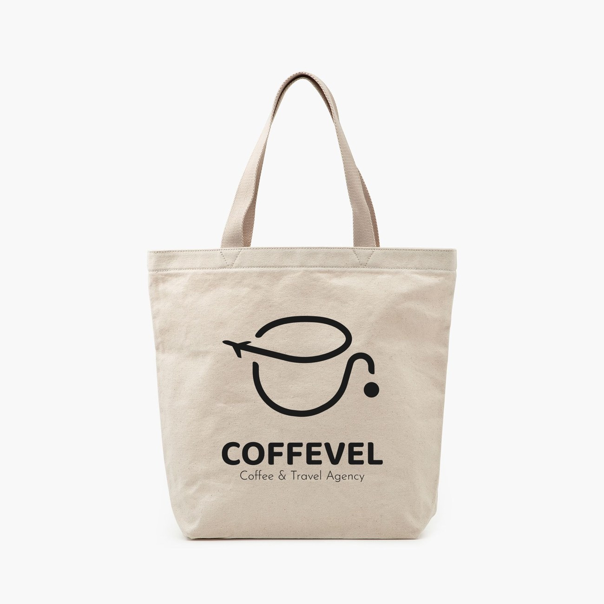

Brand Identity / Campaign Design
COFFEVEL
A coffee and travel agency identity built around one simple visual metaphor: the daily coffee break as the start of a journey.
Concept
Coffee cup, airplane path, and travel rhythm in one mark.
The symbol combines a cup silhouette with an airplane trajectory. The result is deliberately minimal: a flexible mark that can work as a logo, a campaign graphic, or a large-scale environmental detail.

Applications
A compact identity expanded through posters and personal stationery.
The system stays mostly black and white, using scale, paper texture, and bold typography to create recognition across campaign posters and business card applications.

A4 job advertisement poster with map linework and recruitment messaging.

A4 campaign poster using the cup and airplane path as the dominant visual device.

Business card mockup using the personal card variant.

Brand Touchpoints
The identity moves from poster to product environment.
Packaging and takeaway objects keep the system quiet and practical. The logo becomes a small trust mark, while the monochrome palette gives the project a consistent visual memory.
Overview
Final brand presentation.

